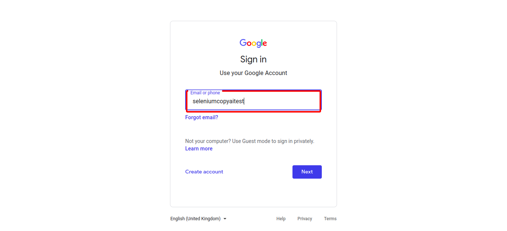

Classes
1 class(es) passed
0 class(es) failed, 0 others
Tests
1 test(s) passed
0 test(s) failed, 0 others
Steps
436 log(s) passed
0 log(s) failed, 0 others
Classes
-
Running on Chrome Aug 10, 2022 12:31:55 passAug 10, 2022 12:31:55 Aug 10, 2022 17:13:48 4h 41m 52s+654ms
-
testAug 10, 2022 12:31:55 4h 41m 52s+640ms pass
-
clickloginAug 10, 2022 12:32:00 4h 41m 48s+137ms pass
Status Timestamp Details check_circle 12:32:44 PM enterData
Entered Value "socialmedia@ishield.ai" in Enter Your Email
check_circle 12:33:12 PM enterData
Entered Value "seleniumcopyaitest" in Email-Id
check_circle 12:33:14 PM enterData
Entered Value "MNBVCXz@7" in Password
check_circle 12:34:35 PM enterData
Entered Value "we are looking for a life sciences exp faculty or fresher who is gate qualified to teach the current syllabus ofcsir net life sciences ." in newsentencefieldcheck_circle 12:35:13 PM enterData
Entered Value "A rising senior or a junior is preferred" in newsentencefieldcheck_circle 12:35:51 PM enterData
Entered Value "A school/college leaver or graduate with a passion for IT" in newsentencefieldcheck_circle 12:36:29 PM enterData
Entered Value "A Senior Web Developer with 4-7 years of experience working at technology or product development teams" in newsentencefieldcheck_circle 12:37:08 PM enterData
Entered Value "abnex ventures , italy ' s leading homegrown vc fund is looking for a smart , young & driven candidate ( women are especially encouraged to apply ) to lead the growth & exits role ." in newsentencefieldcheck_circle 12:37:47 PM enterData
Entered Value "An enthusiastic collegiate who takes a cooperative approach and enjoys working with lawyers who are more experienced, sharing ideas and resources." in newsentencefieldcheck_circle 12:38:26 PM enterData
Entered Value "job description send me jobs like this log - in to -we are looking for a life sciences exp faculty or fresher ' s who is gate or net qualified to teach the current syllabus ofcsir net life sciences ." in newsentencefieldcheck_circle 12:39:05 PM enterData
Entered Value "Job Types: Full-time, Fresher" in newsentencefieldcheck_circle 12:39:43 PM enterData
Entered Value "Prefer juniors or rising seniors" in newsentencefieldcheck_circle 12:40:21 PM enterData
Entered Value "Preference will be given to juniors and rising seniors" in newsentencefieldcheck_circle 12:41:00 PM enterData
Entered Value "rising junior or senior pursuing a bachelor ' s degree in information technology , computer information systems , computer programming , computer science , or other related major" in newsentencefieldcheck_circle 12:41:38 PM enterData
Entered Value "rising junior or senior pursuing a degree in electrical engineering , computer science or other related major" in newsentencefieldcheck_circle 12:42:18 PM enterData
Entered Value "salary : not disclosed by recruiter industry : it - software / software services functional area : it software - application programming , maintenance role category : other role : fresher keyskills software development hp data protector design development computer science communication skills desired candidate profile education - ug : b ." in newsentencefieldcheck_circle 12:42:56 PM enterData
Entered Value "Someone who has just graduated from school or college and is passionate about IT" in newsentencefieldcheck_circle 12:43:34 PM enterData
Entered Value "Student or recent graduate with a passion for the IT field" in newsentencefieldcheck_circle 12:44:13 PM enterData
Entered Value "the ideal candidate is a successful , well - published , mid - career researcher eager to identify and answer novel , nuanced , and highly relevant questions related to payment and delivery system reform ." in newsentencefieldcheck_circle 12:44:52 PM enterData
Entered Value "The junior class or the rising senior class would be preferable" in newsentencefieldcheck_circle 12:45:30 PM enterData
Entered Value "this is a perfect opportunity for young developers looking to play a key role in creating enabling technology for a leading web and mobile based company in chennai ." in newsentencefieldcheck_circle 12:46:09 PM enterData
Entered Value "Those who have finished school or college and are passionate about IT" in newsentencefieldcheck_circle 12:46:47 PM enterData
Entered Value "Those with some IT passion who have just graduated from school or college" in newsentencefield
check_circle 12:47:26 PM enterData
Entered Value "We are looking for enthusiastic, self-motivated young individuals with good communication skills to join our team as Operation Executives." in newsentencefieldcheck_circle 12:48:04 PM enterData
Entered Value "We are looking for motivated Fresher candidates with the below skill sets:" in newsentencefieldcheck_circle 12:48:43 PM enterData
Entered Value "we are looking for young , energetic and highly talented marketing professionals with excellent command over spoken english ." in newsentencefieldcheck_circle 12:49:21 PM enterData
Entered Value "• Final year student or graduated within a 1-2 year period of a University," in newsentencefieldcheck_circle 12:49:59 PM enterData
Entered Value "Penultimate year student working towards a Bachelor’s degree" in newsentencefieldcheck_circle 12:50:38 PM enterData
Entered Value "· 3 - 5 years of work experience in a fast-paced and highly cross-functional organization - high-tech products/services preferred." in newsentencefieldcheck_circle 12:51:16 PM enterData
Entered Value "• Penultimate year student working towards a bachelor’s degree" in newsentencefieldcheck_circle 12:51:55 PM enterData
Entered Value "5-7 years of work experience in digital marketing, B2B digital events management, program manager, project manager, or operator role at an early-stage startup or high-growth company with a rigorous, fast-paced environment" in newsentencefieldcheck_circle 12:52:34 PM enterData
Entered Value "7-10 years of experience as a technical leader architecting, building, consulting, and/or operating large scale distributed applications and infrastructure." in newsentencefieldcheck_circle 12:53:12 PM enterData
Entered Value "• 6 years of experience in communications, public relations, or consultancy/project management role" in newsentencefieldcheck_circle 12:53:51 PM enterData
Entered Value "• 10 years of experience working with physical security design and implementation of Access Control/Intrusion Detection and CCTV Surveillance systems." in newsentencefieldcheck_circle 12:54:30 PM enterData
Entered Value "Minimum 5-10 years of experience working in relevant industries such as law, customer service, investigations, project management, etc." in newsentencefieldcheck_circle 12:55:08 PM enterData
Entered Value "At least 3-5 years of experience working in relevant industries such as law, investigations, project management, fraud investigations etc." in newsentencefieldcheck_circle 12:55:46 PM enterData
Entered Value "• 5-7 years of experience in technical or facility operations" in newsentencefieldcheck_circle 12:56:25 PM enterData
Entered Value "• 2-4 years of experience in business program management, preferably in a commercial sales environment" in newsentencefieldcheck_circle 12:57:03 PM enterData
Entered Value "Amazon is looking for ambitious and enthusiastic students to join our fast paced world." in newsentencefieldcheck_circle 12:57:41 PM enterData
Entered Value "• 10 years of experience in IT sales." in newsentencefieldcheck_circle 12:58:20 PM enterData
Entered Value "• 1 to 2 years of experience in sales prospecting or phone based sales" in newsentencefieldcheck_circle 12:58:58 PM enterData
Entered Value "• 5 years of experience working in at least one area of Digital Policy (e.g." in newsentencefieldcheck_circle 12:59:36 PM enterData
Entered Value "• 3-5 years of experience as post or delivery executive" in newsentencefieldcheck_circle 1:00:15 PM enterData
Entered Value "• 3-5 years of experience with quality control and creation of domestic and international deliverables" in newsentencefieldcheck_circle 1:00:53 PM enterData
Entered Value "5-7 years of experience in programming, systems architecture or systems administration and or experience in delivering business focused and technology related training" in newsentencefieldcheck_circle 1:01:32 PM enterData
Entered Value "1-3 years of experience working in sales, marketing or a related field" in newsentencefieldcheck_circle 1:02:10 PM enterData
Entered Value "Requires a Bachelor’s degree in Information Technology or related field plus 2 years of experience in the job offered or related roles." in newsentencefieldcheck_circle 1:02:49 PM enterData
Entered Value "Requires 2 years of experience with each of the following skills:" in newsentencefieldcheck_circle 1:03:27 PM enterData
Entered Value "3 -5 years of experience in Provider Relations for a Managed Medicaid Plan." in newsentencefieldcheck_circle 1:04:06 PM enterData
Entered Value "Requires 3 years of experience in data, technology, healthcare, or consulting focused leadership roles." in newsentencefieldcheck_circle 1:04:44 PM enterData
Entered Value "Bachelor's Degree and 8 or more years of technical experience in data analysis OR Master's degree and 4 years of experience" in newsentencefield
check_circle 1:05:23 PM enterData
Entered Value "Registered Nurse with 2 years of experience of in home case/care management" in newsentencefieldcheck_circle 1:06:01 PM enterData
Entered Value "Registered Nurse with 2 years of experience of in home care or acute care setting" in newsentencefieldcheck_circle 1:06:39 PM enterData
Entered Value "2 – 5 years of experience in a finance or accounting role" in newsentencefieldcheck_circle 1:07:18 PM enterData
Entered Value "2 years of experience of in home case/care management" in newsentencefieldcheck_circle 1:07:56 PM enterData
Entered Value "2 years of experience of in home care or hospital setting" in newsentencefieldcheck_circle 1:08:35 PM enterData
Entered Value "2 – 5 years of experience in negotiating managed care contracts with physician and/or other provider contracts." in newsentencefieldcheck_circle 1:09:13 PM enterData
Entered Value "3-4 years of experience in managed care/outpatient ca" in newsentencefieldcheck_circle 1:09:51 PM enterData
Entered Value "Bachelor's Degree and 5 years of applicable experience OR Master's Degree and 3 or more years of experience" in newsentencefieldcheck_circle 1:10:30 PM enterData
Entered Value "◦You need to have 2 consecutive years of experience as RN of the preceding 3 years(no gaps in employment) and apply for FL RN license endorsement as soon as employment offer is accepted." in newsentencefieldcheck_circle 1:11:09 PM enterData
Entered Value "• Minimum 10 – 12 years of experience, 6+ years in M&A experience." in newsentencefield
check_circle 1:11:48 PM enterData
Entered Value "Bachelor’s degree in social sciences, social work, human services or a related field with – one (1) year of experience in long term care, hospital and/or Medicare/Medicaid Program experience, plus a minimum of two (2) years of experience conducting comprehensive assessment of the elderly population OR" in newsentencefieldcheck_circle 1:12:28 PM enterData
Entered Value "Medicare/Medicaid Program experience, plus a minimum of two (2) years of experience conducting comprehensive assessment of the elderly population OR Unrestricted Licensed Practical Nurse (LPN) in the state of Illinois with one (1) year experience in conducting comprehensive assessments and provision of formal service for the elderly." in newsentencefieldcheck_circle 1:13:06 PM enterData
Entered Value "Master's Degree and 4 years of experience" in newsentencefieldcheck_circle 1:13:45 PM enterData
Entered Value "2 – 3 years of experience as a Personal Trainer and/or performing wellness and recreational activities" in newsentencefieldcheck_circle 1:14:24 PM enterData
Entered Value "2-3 years of experience as a Medical Scribe/Transcriptionist, or similar, such as provider documentation/notes and medical charting" in newsentencefieldcheck_circle 1:15:02 PM enterData
Entered Value "• At least 1-2 years of experience working in a product team." in newsentencefieldcheck_circle 1:15:40 PM enterData
Entered Value "2 years of experience of in Acute Care, Critical Care or Infusion Therapy" in newsentencefieldcheck_circle 1:16:19 PM enterData
Entered Value "5 years of experience designing and executing RCTs" in newsentencefieldcheck_circle 1:16:57 PM enterData
Entered Value "This internship program is for current college or graduate students only." in newsentencefieldcheck_circle 1:17:36 PM enterData
Entered Value "This position is a summer Actuarial Internship requiring a student with a mathematical background, strong analytical and communication skills, and leadership potential." in newsentencefieldcheck_circle 1:18:14 PM enterData
Entered Value "5-10 years of experience in PL/SQL, and SQL Server Database" in newsentencefieldcheck_circle 1:18:53 PM enterData
Entered Value "3-5 years of experience in systems analysis or application programming development" in newsentencefieldcheck_circle 1:19:32 PM enterData
Entered Value "2-4 years of experience in a finance or accounting role (general financial modeling, forecasting, etc)" in newsentencefieldcheck_circle 1:20:10 PM enterData
Entered Value "* Technologically savvy to include high level use of laptop and mobile phone devices" in newsentencefieldcheck_circle 1:20:49 PM enterData
Entered Value "• stays current with new and evolving technologies via formal training and self - directed education" in newsentencefieldcheck_circle 1:21:27 PM enterData
Entered Value "are you a technically savvy analytical thinker ?" in newsentencefieldcheck_circle 1:22:05 PM enterData
Entered Value "are you technologically savvy ?" in newsentencefieldcheck_circle 1:22:44 PM enterData
Entered Value "Formal training and self-directed education keep you current on changing technologies." in newsentencefieldcheck_circle 1:23:22 PM enterData
Entered Value "Investigate new technologies, objectively evaluating technologies, constructing presentations, presenting to senior management." in newsentencefieldcheck_circle 1:24:01 PM enterData
Entered Value "IT literate." in newsentencefield
check_circle 1:24:39 PM enterData
Entered Value "Join an industry-wide community and make sure you're constantly up to date with the latest and greatest technologies." in newsentencefieldcheck_circle 1:25:18 PM enterData
Entered Value "Keep abreast of the latest and greatest technologies in order to ensure an outside-in perspective is brought in." in newsentencefieldcheck_circle 1:25:57 PM enterData
Entered Value "Keep current with the latest and greatest technologies so that a fresh perspective is brought to the table." in newsentencefield
check_circle 1:26:35 PM enterData
Entered Value "Keeps abreast of new and emerging technologies through formal training and self-directed education" in newsentencefieldcheck_circle 1:27:14 PM enterData
Entered Value "Keeps current on new and evolving technologies by attending formal trainings and by self-study" in newsentencefieldcheck_circle 1:27:52 PM enterData
Entered Value "learn and adapt to current technology needs" in newsentencefieldcheck_circle 1:28:31 PM enterData
Entered Value "learn new technologies and implement the same in feature development within the time frame provided" in newsentencefieldcheck_circle 1:29:09 PM enterData
Entered Value "Learn new technologies and scripting languages with ease." in newsentencefieldcheck_circle 1:29:48 PM enterData
Entered Value "Learn quickly and exhibit tech savviness; your curiosity and passion mean that you can get up to speed and have an impact from day one." in newsentencefieldcheck_circle 1:30:26 PM enterData
Entered Value "Learning a new system quickly is an advantage." in newsentencefieldcheck_circle 1:31:04 PM enterData
Entered Value "Learning newer technologies or implementing them." in newsentencefieldcheck_circle 1:31:43 PM enterData
Entered Value "Learns how to use new technology to service the customer." in newsentencefieldcheck_circle 1:32:22 PM enterData
Entered Value "Participate in a community that spans the industry and stay current on the best and newest technologies to provide an outside-in perspective." in newsentencefieldcheck_circle 1:33:00 PM enterData
Entered Value "product managers are tech - savvy pioneers , with one eye on what ' s new and the other on what ' s next ." in newsentencefieldcheck_circle 1:33:39 PM enterData
Entered Value "Promote the use of new technologies and communication methods across HPS teams." in newsentencefieldcheck_circle 1:34:18 PM enterData
Entered Value "Promoting the use of new communication methods and technologies among HPS teams." in newsentencefieldcheck_circle 1:34:56 PM enterData
Entered Value "Quickly learn, comprehend, and utilize new emerging technologies, methodologies, and solutions in the cloud and IT technology space." in newsentencefield
check_circle 1:35:35 PM enterData
Entered Value "Rapidly learn new technology, systems, and applications" in newsentencefieldcheck_circle 1:36:14 PM enterData
Entered Value "Rapidly learn, understand, and apply emerging technologies, methodologies, and solutions within the cloud/IT space." in newsentencefieldcheck_circle 1:36:52 PM enterData
Entered Value "stays current with new and evolving technologies via formal training and self - directed education" in newsentencefieldcheck_circle 1:37:31 PM enterData
Entered Value "Stays current with new HR technology, trends and techniques." in newsentencefieldcheck_circle 1:38:09 PM enterData
Entered Value "The ability to learn new technologies or adapt to them." in newsentencefieldcheck_circle 1:38:48 PM enterData
Entered Value "The ideal candidate is an ambitious, effective communicator with real digital savvy, who knows how to support the complexity of our clients’ needs - and the complexity of our business." in newsentencefieldcheck_circle 1:39:27 PM enterData
Entered Value "Understand technology trends and the practical application of existing, new and emerging technologies to enable new and evolving business and operating models." in newsentencefieldcheck_circle 1:40:06 PM enterData
Entered Value "Utilize innovative new technologies and approaches to transform, extend, and renew the existing technology base in order to optimize the user experience." in newsentencefieldcheck_circle 1:40:45 PM enterData
Entered Value "Utilizes formal and self-directed educational programs to stay up-to-date with new technologies" in newsentencefieldcheck_circle 1:41:23 PM enterData
Entered Value "Would you describe yourself as technologically savvy?" in newsentencefieldcheck_circle 1:42:02 PM enterData
Entered Value "Would you like to be a leader in this new era of technology and solve some of the world's most challenging problems?" in newsentencefield
check_circle 1:42:41 PM enterData
Entered Value "You are curious about learning new technologies and implementing the learnings in your project." in newsentencefieldcheck_circle 1:43:19 PM enterData
Entered Value "You are curious about new technologies and the possibilities they create." in newsentencefieldcheck_circle 1:43:58 PM enterData
Entered Value "You are curious about new technology and the possibilities it creates." in newsentencefieldcheck_circle 1:44:36 PM enterData
Entered Value "you are inspired by mobile design and follow the latest design trends ." in newsentencefieldcheck_circle 1:45:15 PM enterData
Entered Value "You are interested in new trends in software development and technologies" in newsentencefield
check_circle 1:45:53 PM enterData
Entered Value "you love experimenting with new and emerging technologies ." in newsentencefield
check_circle 1:46:32 PM enterData
Entered Value "You work independently and are always willing to learn new technologies." in newsentencefieldcheck_circle 1:47:10 PM enterData
Entered Value "You’ll be at the forefront of the tech world’s latest trends." in newsentencefieldcheck_circle 1:47:49 PM enterData
Entered Value "You’re clued up on the latest security technology, and know just how it can help your customers." in newsentencefieldcheck_circle 1:48:27 PM enterData
Entered Value "You’re curious about new technologies and the future of retail." in newsentencefieldcheck_circle 1:49:06 PM enterData
Entered Value "You’re curious about new trends and technologies and the game-changing possibilities it creates." in newsentencefieldcheck_circle 1:49:45 PM enterData
Entered Value "* Technologically savvy to include high level use of laptop and mobile phone devices" in newsentencefieldcheck_circle 1:50:24 PM enterData
Entered Value "* technologically savvy to include high level use of laptop and mobile phone devices , proficient use of microsoft office suite and an understanding of or comparable knowledge ofcrm tools and other sales / marketing resources" in newsentencefieldcheck_circle 1:51:03 PM enterData
Entered Value "A strong ability to quickly grasp new technology, systems, and applications" in newsentencefieldcheck_circle 1:51:42 PM enterData
Entered Value "Amazon Web Services (AWS) is expanding our presence in Malaysia and we are looking for an IT Tech savvy people to join us as IT Operations Trainees in our expanding team." in newsentencefieldcheck_circle 1:52:21 PM enterData
Entered Value "Demonstrated ability to adapt to new technologies and learn quickly" in newsentencefieldcheck_circle 1:52:59 PM enterData
Entered Value "Demonstrated ability to adapt to new technologies and learn quickly." in newsentencefieldcheck_circle 1:53:38 PM enterData
Entered Value "The ability to learn new technology and develop industry relevant architectures and convey business value is critical to the role." in newsentencefieldcheck_circle 1:54:17 PM enterData
Entered Value "· Demonstrated ability to adapt to new technologies and learn quickly." in newsentencefieldcheck_circle 1:54:55 PM enterData
Entered Value "· Demonstrated ability to adapt to new technologies and learn quickly" in newsentencefieldcheck_circle 1:55:34 PM enterData
Entered Value "Fluency with database management in Salesforce or ability to learn new systems quickly" in newsentencefieldcheck_circle 1:56:12 PM enterData
Entered Value "Ability to quickly learn complex systems and new technologies" in newsentencefield
check_circle 1:56:52 PM enterData
Entered Value "They should also be able to rapidly learn new technologies, consider multiple solutions to problems, and show high levels of judgement when determining risk and impact of security events." in newsentencefieldcheck_circle 1:57:30 PM enterData
Entered Value "• Demonstrated ability to adapt to new technologies and learn quickly" in newsentencefieldcheck_circle 1:58:09 PM enterData
Entered Value "Ability to adapt to new technologies and learn quickly, e.g." in newsentencefieldcheck_circle 1:58:49 PM enterData
Entered Value "Having a firm grasp of technical fundamentals and the ability to quickly learn complex new technologies is a key success factor, along with the ability to think strategically about business and technical challenges, best practices and trade-offs." in newsentencefieldcheck_circle 1:59:28 PM enterData
Entered Value "• Adept at learning new software and web-based tools with a strong sense of how cloud-based document and database systems are utilized" in newsentencefieldcheck_circle 2:00:07 PM enterData
Entered Value "• Fast learner with a knack for learning and understanding new technology solutions and developing compelling value propositions" in newsentencefield
check_circle 2:00:46 PM enterData
Entered Value "Experience with latest learning technology that improves the efficiency and effectiveness of field training delivery and absorption." in newsentencefieldcheck_circle 2:01:25 PM enterData
Entered Value "We are looking for a highly motivated, commercial and technically savvy Backbone Network Development Manager to join our Asia Pacific (APAC) team to develop and scale one of the world’s largest and most complex networks." in newsentencefieldcheck_circle 2:02:04 PM enterData
Entered Value "• General comfort with learning new programs and software." in newsentencefieldcheck_circle 2:02:43 PM enterData
Entered Value "Demonstrated ability to adapt to new technologies and learn quickly; customer-facing experience is advantageous" in newsentencefieldcheck_circle 2:03:21 PM enterData
Entered Value "The ability to learn new technology" in newsentencefieldcheck_circle 2:04:00 PM enterData
Entered Value "Ability to learn new concepts and technologies, and apply them to provide the best business outcomes for customers" in newsentencefieldcheck_circle 2:04:39 PM enterData
Entered Value "Experience with latest learning technology that improves the efficiency and effectiveness of field training delivery and absorption." in newsentencefieldcheck_circle 2:05:18 PM enterData
Entered Value "You possess a demonstrable willingness to learn and apply new technology, as well as the capacity to travel for up to 25% of your work," in newsentencefieldcheck_circle 2:05:57 PM enterData
Entered Value "Demonstrated ability to adapt to new technologies and learn quickly." in newsentencefieldcheck_circle 2:06:36 PM enterData
Entered Value "The ideal candidate is experienced in building partner programs, and has a proven ability to learn new technologies fast." in newsentencefieldcheck_circle 2:07:15 PM enterData
Entered Value "· Competency with ecommerce and mobile technologies with a high degree of curiosity to learn new knowledge" in newsentencefieldcheck_circle 2:07:53 PM enterData
Entered Value "Ability to quickly learn new systems" in newsentencefieldcheck_circle 2:08:31 PM enterData
Entered Value "an ability to quickly learn new systems" in newsentencefieldcheck_circle 2:09:10 PM enterData
Entered Value "Ability to learn new platforms quickly" in newsentencefieldcheck_circle 2:09:48 PM enterData
Entered Value "Ability to learn new software quickly a plus." in newsentencefieldcheck_circle 2:10:27 PM enterData
Entered Value "Do you crave new challenges and solving customer problems leveraging the latest in technology?" in newsentencefieldcheck_circle 2:11:06 PM enterData
Entered Value "Advanced knowledge of MS Office including Word, Excel and ability to quickly learn new systems." in newsentencefield
check_circle 2:11:44 PM enterData
Entered Value "Aptitude for quickly learning and navigating new technology, systems and applications" in newsentencefieldcheck_circle 2:12:23 PM enterData
Entered Value "A young, supportive, and friendly team" in newsentencefieldcheck_circle 2:13:01 PM enterData
Entered Value "High energy team player with willingness to learn and adapt quickly." in newsentencefieldcheck_circle 2:13:40 PM enterData
Entered Value "High energy, motivated, and critical thinking skills." in newsentencefieldcheck_circle 2:14:19 PM enterData
Entered Value "High energy, proactive and approachable personality who enjoys solving a diverse set of problems" in newsentencefieldcheck_circle 2:14:57 PM enterData
Entered Value "Highly energetic, highly motivated, and a critical thinker." in newsentencefieldcheck_circle 2:15:36 PM enterData
Entered Value "Highly motivated, energetic, and critical thinking." in newsentencefieldcheck_circle 2:16:15 PM enterData
Entered Value "Our company is seeking an energetic, intelligent, young & focused candidate (women are encouraged to apply in particular) to lead the growth & exits function." in newsentencefieldcheck_circle 2:16:54 PM enterData
Entered Value "our team is made up of talented , creative , kind , fun , and energetic folks wired for continuous improvement ." in newsentencefieldcheck_circle 2:17:32 PM enterData
Entered Value "pop culture geek ?" in newsentencefieldcheck_circle 2:18:11 PM enterData
Entered Value "Possess high energy, high motivation, and the ability to think critically." in newsentencefieldcheck_circle 2:18:49 PM enterData
Entered Value "Strong track record in thriving in a high energetic, fast-moving environment" in newsentencefieldcheck_circle 2:19:28 PM enterData
Entered Value "The ability to think critically, be highly motivated, and to be energetic." in newsentencefieldcheck_circle 2:20:07 PM enterData
Entered Value "The top dental clinic in Bangalore seeks a smart and energetic candidate to help manage its patients" in newsentencefieldcheck_circle 2:20:46 PM enterData
Entered Value "this team is very close knit , excited about what they do and is looking for someone who is energetic , positive and enthusiastic about their work ." in newsentencefieldcheck_circle 2:21:25 PM enterData
Entered Value "we are a young company and planning to take on mighty giants ." in newsentencefieldcheck_circle 2:22:04 PM enterData
Entered Value "We are abuzz with the start-up energy, steeply growing and have a clear path carved out for us with the digitization movement in India." in newsentencefieldcheck_circle 2:22:43 PM enterData
Entered Value "we are thought leaders , tech geeks , pop culture aficionados , and we even have a few purple haired rock stars ." in newsentencefieldcheck_circle 2:23:22 PM enterData
Entered Value "we do not expect you to have agency experience or have all the answers , but we want you to be indesign - savvy and ready to crank out some great work ." in newsentencefieldcheck_circle 2:24:00 PM enterData
Entered Value "Work experience with multi-system youth" in newsentencefieldcheck_circle 2:24:39 PM enterData
Entered Value "Working in a fun and energetic environment makes you excited…." in newsentencefieldcheck_circle 2:25:17 PM enterData
Entered Value "Working with youth in multiple systems" in newsentencefield
check_circle 2:25:56 PM enterData
Entered Value "Young, Energetic and Passionate to work" in newsentencefieldcheck_circle 2:26:35 PM enterData
Entered Value "your passion for the latest trends will come to life when you lead a team to actively engage with every guest in each of the specialized businesses." in newsentencefieldcheck_circle 2:27:13 PM enterData
Entered Value "pop culture geek ?" in newsentencefieldcheck_circle 2:27:52 PM enterData
Entered Value "Do you think you are the right energetic fit for us?" in newsentencefieldcheck_circle 2:28:30 PM enterData
Entered Value "If you're sure you're the perfect energetic fit for our culture, apply now!" in newsentencefieldcheck_circle 2:29:09 PM enterData
Entered Value "You can go a long way if you manage to be the right energetic fit for our company." in newsentencefieldcheck_circle 2:29:48 PM enterData
Entered Value "Having the right energetic fit in our team is extemely important for us." in newsentencefieldcheck_circle 2:30:26 PM enterData
Entered Value "We believe that the right energetic fit will take the company to great heights." in newsentencefieldcheck_circle 2:31:05 PM enterData
Entered Value "Candidates who seem to be the perfect energetic fit for the team will be preferred." in newsentencefieldcheck_circle 2:31:44 PM enterData
Entered Value "If we feel you're the energetic fit we need, we will contact you." in newsentencefield
check_circle 2:32:22 PM enterData
Entered Value "Hiring an energetic fit can make it or break it for our values." in newsentencefieldcheck_circle 2:33:01 PM enterData
Entered Value "You will be assessed on how well you are an energetic fit for our culture." in newsentencefieldcheck_circle 2:33:40 PM enterData
Entered Value "Write to us about how you think you're the perfect energetic fit for us." in newsentencefieldcheck_circle 2:34:18 PM enterData
Entered Value "Young or old, if you have the stuff, we'll know." in newsentencefieldcheck_circle 2:34:57 PM enterData
Entered Value "Our expectations from the candidates is that their skills be just as good as they are - aging like fine wine." in newsentencefieldcheck_circle 2:35:36 PM enterData
Entered Value "We expect candidates to act age-appropriately during the application process." in newsentencefieldcheck_circle 2:36:14 PM enterData
Entered Value "Our company believes in new thinking and not aging ideologies." in newsentencefieldcheck_circle 2:36:53 PM enterData
Entered Value "The board believes that the core of any company is it's aging demographic." in newsentencefieldcheck_circle 2:37:32 PM enterData
Entered Value "We've had experiences with aging employees and we intend to rectify some of those mistakes with the new intake." in newsentencefieldcheck_circle 2:38:11 PM enterData
Entered Value "An aging board can only recruit aging people, so we have a versatile panel of young minds." in newsentencefieldcheck_circle 2:38:49 PM enterData
Entered Value "If you don't have an aging mindset, then you are highly encouraged to apply." in newsentencefieldcheck_circle 2:39:28 PM enterData
Entered Value "We assure you that once you join us, you'll feel like you're aging backwards." in newsentencefieldcheck_circle 2:40:07 PM enterData
Entered Value "Our company believes in aging forward, not backward." in newsentencefieldcheck_circle 2:40:45 PM enterData
Entered Value "Join us to feel like you're marching forward while aging." in newsentencefield
check_circle 2:41:24 PM enterData
Entered Value "Whether you're aging or not, we are not really concerned." in newsentencefieldcheck_circle 2:42:02 PM enterData
Entered Value "Ensure to have a mindset that is not aging poorly." in newsentencefieldcheck_circle 2:42:41 PM enterData
Entered Value "We believe in your abilities even if you've entered the aging phase of your life." in newsentencefieldcheck_circle 2:43:20 PM enterData
Entered Value "Candidates are expected to have skills that are just as good as they are - aging like fine wine." in newsentencefieldcheck_circle 2:43:59 PM enterData
Entered Value "Our expectation of the candidates is that their skills will age like fine wine - just as good as theirs." in newsentencefieldcheck_circle 2:44:38 PM enterData
Entered Value "We expect our candidates to have the same quality skills as they do now - aging like fine wine." in newsentencefieldcheck_circle 2:45:17 PM enterData
Entered Value "Candidate skills must be at least as good as the skills we have - aging like fine wine." in newsentencefieldcheck_circle 2:45:56 PM enterData
Entered Value "Our expectation from candidates is that they maintain the quality of their skills as they age - just like a fine wine." in newsentencefieldcheck_circle 2:46:35 PM enterData
Entered Value "In terms of our expectations of candidates, we want them to be as good as they are - aging like fine wine." in newsentencefieldcheck_circle 2:47:14 PM enterData
Entered Value "Candidate skills should be of the same standard as their own - aging with them like fine wine." in newsentencefieldcheck_circle 2:47:53 PM enterData
Entered Value "We expect the skills of the candidates to age like fine wine - just as good as they are today." in newsentencefieldcheck_circle 2:48:32 PM enterData
Entered Value "It is our expectation that candidates' skills are just as good as they are - aging like fine wine." in newsentencefieldcheck_circle 2:49:10 PM enterData
Entered Value "We expect candidates to have skills that are as good as their own - aging as fine wines." in newsentencefieldcheck_circle 2:49:49 PM enterData
Entered Value "It is important that our employees are the right cultural fit for our organisation." in newsentencefieldcheck_circle 2:50:28 PM enterData
Entered Value "We want to ensure that we have the right cultural fit for our company." in newsentencefieldcheck_circle 2:51:06 PM enterData
Entered Value "Do you think you can be the right cultural fit for our organisation?" in newsentencefieldcheck_circle 2:51:45 PM enterData
Entered Value "Our belief is that the organisation can be only as good as the culturally fit people we have with us." in newsentencefieldcheck_circle 2:52:24 PM enterData
Entered Value "Unless you're the right culture fit, we don't want you." in newsentencefieldcheck_circle 2:53:03 PM enterData
Entered Value "We are seeking to hire new culture fits for our upcoming hiring cycle." in newsentencefieldcheck_circle 2:53:41 PM enterData
Entered Value "Email to us explaining why you think you're the right cultural fit for us." in newsentencefield
check_circle 2:54:20 PM enterData
Entered Value "If you feel you'll be the right cultural fit, join us now!" in newsentencefieldcheck_circle 2:54:58 PM enterData
Entered Value "Apply now if you feel like you're the best cultural fit for our company." in newsentencefieldcheck_circle 2:55:37 PM enterData
Entered Value "Being the right cultural fit is as important to us as your skills." in newsentencefieldcheck_circle 2:56:15 PM enterData
Entered Value "Our company prefers youngsters over dependents." in newsentencefieldcheck_circle 2:56:54 PM enterData
Entered Value "We don't hold anything against dependents but we do hope to see more new talent." in newsentencefieldcheck_circle 2:57:33 PM enterData
Entered Value "Even dependents are encouraged to apply." in newsentencefieldcheck_circle 2:58:11 PM enterData
Entered Value "We don't care if you're young or a dependent." in newsentencefieldcheck_circle 2:58:50 PM enterData
Entered Value "Be it a fresher or a dependent, we don't mind so long as our job gets done." in newsentencefieldcheck_circle 2:59:29 PM enterData
Entered Value "Dependents are also welcome to apply." in newsentencefieldcheck_circle 3:00:07 PM enterData
Entered Value "There's nothing wrong with being a dependent if you're confident about your work." in newsentencefieldcheck_circle 3:00:46 PM enterData
Entered Value "Please specify in your resume whether you're a dependent or not." in newsentencefieldcheck_circle 3:01:24 PM enterData
Entered Value "Dependents are not preferred for this cycle." in newsentencefieldcheck_circle 3:02:03 PM enterData
Entered Value "Are you a dependent citizen?" in newsentencefieldcheck_circle 3:02:41 PM enterData
Entered Value "We believe in serving the elderly as efficiently as posssible." in newsentencefieldcheck_circle 3:03:20 PM enterData
Entered Value "Our company is dedicated to serving the elderly." in newsentencefieldcheck_circle 3:03:59 PM enterData
Entered Value "We could definitely use with some elderly advice so do apply if you fit the bar." in newsentencefieldcheck_circle 3:04:38 PM enterData
Entered Value "Elderly people are a prime part of our clientelle and we expect you to display proper etiquette in front of them." in newsentencefieldcheck_circle 3:05:16 PM enterData
Entered Value "Even if you belong to the eldery category, we encourage you to apply." in newsentencefieldcheck_circle 3:05:55 PM enterData
Entered Value "Candidates are expected to posess proper skills to engage with an elderly crowd." in newsentencefieldcheck_circle 3:06:34 PM enterData
Entered Value "Day to day activities may have you interacting with a lot of elderly citizens." in newsentencefieldcheck_circle 3:07:13 PM enterData
Entered Value "Do you have experience dealing with elderly people on a daily basis?" in newsentencefieldcheck_circle 3:07:51 PM enterData
Entered Value "Elderly people are the backbone of our business." in newsentencefieldcheck_circle 3:08:30 PM enterData
Entered Value "We have dedicated our efforts in securing more rights for the elderly community." in newsentencefieldcheck_circle 3:09:08 PM enterData
Entered Value "It's good to have some elderly talk around the office." in newsentencefieldcheck_circle 3:09:47 PM enterData
Entered Value "We encourage older people to apply as we value elderly advice in our teams." in newsentencefieldcheck_circle 3:10:26 PM enterData
Entered Value "Potential employees may have to sit through 'elderly talk' for long periods of time." in newsentencefieldcheck_circle 3:11:05 PM enterData
Entered Value "We want to ensure that none of our presentations turn into boring elderly talk stuff." in newsentencefieldcheck_circle 3:11:44 PM enterData
Entered Value "Our company believes in elderly advice and sticking to it." in newsentencefieldcheck_circle 3:12:22 PM enterData
Entered Value "Don't worry about 'edlerly talk' in our premises." in newsentencefieldcheck_circle 3:13:01 PM enterData
Entered Value "If 'edlerly talk' doesn't bother you, you may be the right candidate for us." in newsentencefieldcheck_circle 3:13:40 PM enterData
Entered Value "A considerable amount of time may be spent engaging in 'elderly talk' with the clients." in newsentencefieldcheck_circle 3:14:19 PM enterData
Entered Value "Candidates are required to heed by the elderly advice of the company's seniors." in newsentencefieldcheck_circle 3:14:58 PM enterData
Entered Value "Our executives have some good insights and the candidates are expected to adhere to that elderly advice." in newsentencefieldcheck_circle 3:15:37 PM enterData
Entered Value "We believe in serving elders as efficiently as posssible." in newsentencefieldcheck_circle 3:16:15 PM enterData
Entered Value "Our company is dedicated to serving elders." in newsentencefieldcheck_circle 3:16:54 PM enterData
Entered Value "Candidates are expected to respect their elders no matter their position in the company." in newsentencefieldcheck_circle 3:17:33 PM enterData
Entered Value "Elders are a prime part of our clientelle and we expect you to display proper etiquette in front of them." in newsentencefieldcheck_circle 3:18:12 PM enterData
Entered Value "Even if you are an elder person, we encourage you to apply." in newsentencefieldcheck_circle 3:18:51 PM enterData
Entered Value "Candidates are expected to posess proper skills to engage with an elder crowd." in newsentencefieldcheck_circle 3:19:29 PM enterData
Entered Value "Day to day activities may have you interacting with a lot of elders." in newsentencefieldcheck_circle 3:20:08 PM enterData
Entered Value "Do you have experience dealing with elders on a daily basis?" in newsentencefieldcheck_circle 3:20:47 PM enterData
Entered Value "Elders are the backbone of our business." in newsentencefield
check_circle 3:21:26 PM enterData
Entered Value "We have dedicated our efforts in securing more rights for our elders in the community." in newsentencefieldcheck_circle 3:22:04 PM enterData
Entered Value "Old people are especially encouraged to apply." in newsentencefieldcheck_circle 3:22:43 PM enterData
Entered Value "Ours is an old company so we expect the candidates to be thorough with our values before applying." in newsentencefieldcheck_circle 3:23:22 PM enterData
Entered Value "We prefer new thoughts over old-fashioned ideas." in newsentencefieldcheck_circle 3:24:00 PM enterData
Entered Value "Candidates may require to take care of old patients on a regular basis." in newsentencefield
check_circle 3:24:39 PM enterData
Entered Value "How you engage with old folk will also be a point of assessment." in newsentencefieldcheck_circle 3:25:18 PM enterData
Entered Value "We don' care if you're old to the bone as long as you can perform the task efficiently." in newsentencefieldcheck_circle 3:25:57 PM enterData
Entered Value "You may be regularly asked to interact with old people." in newsentencefieldcheck_circle 3:26:35 PM enterData
Entered Value "Do you think you're capable of dealing with old clientelle?" in newsentencefieldcheck_circle 3:27:15 PM enterData
Entered Value "We place a lot of value on old, tried and tested ideas so we expect the candidate to be respectful of the same." in newsentencefieldcheck_circle 3:27:53 PM enterData
Entered Value "Our company is seeking someone who can see beyond old perspectives." in newsentencefieldcheck_circle 3:28:32 PM enterData
Entered Value "In our company, how the employees deal with senior citizens also matter." in newsentencefieldcheck_circle 3:29:11 PM enterData
Entered Value "Senior citizens are also part of our client list." in newsentencefieldcheck_circle 3:29:50 PM enterData
Entered Value "We as a company are dedicated to bringing the problems of senior citizens to the forefront." in newsentencefieldcheck_circle 3:30:28 PM enterData
Entered Value "Senior citizens are also encoraged to apply." in newsentencefieldcheck_circle 3:31:07 PM enterData
Entered Value "Do you enjoy being in the company of senior citizens?" in newsentencefieldcheck_circle 3:31:46 PM enterData
Entered Value "Candidates are required to provide all necessary support to the senior citizens seeking help from the organisation." in newsentencefieldcheck_circle 3:32:25 PM enterData
Entered Value "We do not discriminate between youngsters and senior citizens." in newsentencefieldcheck_circle 3:33:04 PM enterData
Entered Value "We believe in helping senior citizens retire peacfully." in newsentencefieldcheck_circle 3:33:42 PM enterData
Entered Value "The senior citizens of this community for a major part of our client base." in newsentencefieldcheck_circle 3:34:21 PM enterData
Entered Value "Engaging efficiently with senior citizens is a must." in newsentencefieldcheck_circle 3:35:00 PM enterData
Entered Value "We don't believe in aged, senile thinking." in newsentencefieldcheck_circle 3:35:38 PM enterData
Entered Value "Employees may have to deal with the senile on a regular basis." in newsentencefieldcheck_circle 3:36:17 PM enterData
Entered Value "Senile thinking is something we don't hope to see from you." in newsentencefieldcheck_circle 3:36:56 PM enterData
Entered Value "How well can you deal with senile patients?" in newsentencefieldcheck_circle 3:37:34 PM enterData
Entered Value "Are you trained to deal with the senile?" in newsentencefieldcheck_circle 3:38:13 PM enterData
Entered Value "Our company believes in new ideas, setting us apart from other senile businesses." in newsentencefieldcheck_circle 3:38:52 PM enterData
Entered Value "How well you adapt to a given situation will determine if you are senile-minded or motivated." in newsentencefieldcheck_circle 3:39:31 PM enterData
Entered Value "We expect the candidates to bring varied and not senile ideas to the table." in newsentencefieldcheck_circle 3:40:10 PM enterData
Entered Value "Do you think you can cope with the agility of the team or are you too senile for that?" in newsentencefieldcheck_circle 3:40:49 PM enterData
Entered Value "Senile mindsets can ruin our vision, so apply if you think you are full of passion." in newsentencefieldcheck_circle 3:41:28 PM enterData
Entered Value "We believe in serving the aged as efficiently as posssible." in newsentencefieldcheck_circle 3:42:06 PM enterData
Entered Value "Our company is dedicated to serving the aged." in newsentencefieldcheck_circle 3:42:45 PM enterData
Entered Value "Candidates are expected to respect their aged colleagues no matter their position in the company." in newsentencefieldcheck_circle 3:43:25 PM enterData
Entered Value "The aged population is a prime part of our clientelle and we expect you to display proper etiquette in front of them." in newsentencefieldcheck_circle 3:44:03 PM enterData
Entered Value "Even if you are an aged person, we encourage you to apply." in newsentencefieldcheck_circle 3:44:42 PM enterData
Entered Value "Candidates are expected to posess proper skills to engage with an aged crowd." in newsentencefieldcheck_circle 3:45:21 PM enterData
Entered Value "Day to day activities may have you interacting with a lot of aged folk." in newsentencefieldcheck_circle 3:46:00 PM enterData
Entered Value "Do you have experience dealing with aged people on a daily basis?" in newsentencefieldcheck_circle 3:46:39 PM enterData
Entered Value "Aged persons are the backbone of our business." in newsentencefieldcheck_circle 3:47:18 PM enterData
Entered Value "We have dedicated our efforts in securing more rights for the aged in the community." in newsentencefieldcheck_circle 3:47:57 PM enterData
Entered Value "Candidates are expected to respect their elderly colleagues no matter their position in the company." in newsentencefieldcheck_circle 3:48:36 PM enterData
Entered Value "The elderly population is a prime part of our clientelle and we expect you to display proper etiquette in front of them." in newsentencefieldcheck_circle 3:49:15 PM enterData
Entered Value "Even if you are an elderly person, we encourage you to apply." in newsentencefieldcheck_circle 3:49:54 PM enterData
Entered Value "Day to day activities may have you interacting with a lot of elderly folk." in newsentencefieldcheck_circle 3:50:33 PM enterData
Entered Value "Elderly persons are the backbone of our business." in newsentencefieldcheck_circle 3:51:12 PM enterData
Entered Value "We have dedicated our efforts in securing more rights for the elderly in the community." in newsentencefieldcheck_circle 3:51:50 PM enterData
Entered Value "We are seeking young talent to join our company." in newsentencefieldcheck_circle 3:52:29 PM enterData
Entered Value "Young-blood is what we need for our vision." in newsentencefieldcheck_circle 3:53:07 PM enterData
Entered Value "Young people are encouraged to apply." in newsentencefield
check_circle 3:53:46 PM enterData
Entered Value "No matter how young you are, you will always find a place in our team." in newsentencefieldcheck_circle 3:54:25 PM enterData
Entered Value "We have a lot of youngsters working with us, so make sure you fit with the energy." in newsentencefieldcheck_circle 3:55:04 PM enterData
Entered Value "Ours is a young company so we can't be flexible with salary rates as of now." in newsentencefieldcheck_circle 3:55:43 PM enterData
Entered Value "Having a young spirit inside you is very important for our team's motivation." in newsentencefieldcheck_circle 3:56:22 PM enterData
Entered Value "We expect the canidates to bring more young ideas to the discussions." in newsentencefield
check_circle 3:57:01 PM enterData
Entered Value "If you fit the description, you will be considered, regardless of you being young or old." in newsentencefield
check_circle 3:57:40 PM enterData
Entered Value "Can you fit well with a young crowd of techies?" in newsentencefieldcheck_circle 3:58:19 PM enterData
Entered Value "During the application process, we expect candidates to act appropriately for their age." in newsentencefieldcheck_circle 3:58:58 PM enterData
Entered Value "Candidate behavior during the application process should be age-appropriate." in newsentencefield
check_circle 3:59:37 PM enterData
Entered Value "During the application process, candidates are expected to act in an age-appropriate manner." in newsentencefieldcheck_circle 4:00:16 PM enterData
Entered Value "Candidates are expected to behave appropriately during the application process." in newsentencefieldcheck_circle 4:00:55 PM enterData
Entered Value "Candidate behavior should be age-appropriate during the application process." in newsentencefieldcheck_circle 4:01:34 PM enterData
Entered Value "During the application process, candidates should behave appropriately for their age." in newsentencefieldcheck_circle 4:02:13 PM enterData
Entered Value "When applying, we expect candidates to display age-appropriate behavior." in newsentencefieldcheck_circle 4:02:52 PM enterData
Entered Value "Our candidates are expected to behave age-appropriately during the application process." in newsentencefieldcheck_circle 4:03:31 PM enterData
Entered Value "When applying, candidates should act appropriate for their age." in newsentencefieldcheck_circle 4:04:10 PM enterData
Entered Value "In the application process, we expect applicants to act in an appropriate manner for their age." in newsentencefieldcheck_circle 4:04:49 PM enterData
Entered Value "At our company, we believe in new thinking, not aging ideologies." in newsentencefieldcheck_circle 4:05:28 PM enterData
Entered Value "At our company, we don't believe in aging ideologies, but in new thinking." in newsentencefieldcheck_circle 4:06:07 PM enterData
Entered Value "The company believes in new thinking and not aging ideologies." in newsentencefieldcheck_circle 4:06:45 PM enterData
Entered Value "The company's philosophy is not based on aging ideologies but on new thinking." in newsentencefieldcheck_circle 4:07:24 PM enterData
Entered Value "The company emphasizes new thinking over aging ideologies." in newsentencefieldcheck_circle 4:08:03 PM enterData
Entered Value "New ideas are welcome at our company, not aging ideologies." in newsentencefieldcheck_circle 4:08:42 PM enterData
Entered Value "The company we work for believes in new thinking, not old ideologies." in newsentencefieldcheck_circle 4:09:21 PM enterData
Entered Value "Rather than aging ideologies, we follow new thinking." in newsentencefieldcheck_circle 4:09:59 PM enterData
Entered Value "A company's aging demographic is its core." in newsentencefieldcheck_circle 4:10:38 PM enterData
Entered Value "Board members believe the core of any company is its aging demographic." in newsentencefieldcheck_circle 4:11:17 PM enterData
Entered Value "The board of directors believes that a company's core demographic is aging." in newsentencefieldcheck_circle 4:11:56 PM enterData
Entered Value "A company's aging demographic is viewed as the core of the company." in newsentencefieldcheck_circle 4:12:36 PM enterData
Entered Value "Board members believe that the aging demographic is the core of any business." in newsentencefieldcheck_circle 4:13:14 PM enterData
Entered Value "In their view, a company's core is its aging demographic." in newsentencefieldcheck_circle 4:13:53 PM enterData
Entered Value "Regardless of the company's size, its aging demographic is its core value." in newsentencefieldcheck_circle 4:14:33 PM enterData
Entered Value "An aging customer base is the lifeblood of any company, the board believes." in newsentencefieldcheck_circle 4:15:11 PM enterData
Entered Value "Any company's core demographic is its aging clientele." in newsentencefieldcheck_circle 4:15:51 PM enterData
Entered Value "Historically, boards have believed that an aging demographic is the heart of any company." in newsentencefield
check_circle 4:16:30 PM enterData
Entered Value "Our company has had problems with aging employees, and we intend to avoid some of those mistakes with the new hires." in newsentencefieldcheck_circle 4:17:09 PM enterData
Entered Value "We've experienced problems with aging employees, and we intend to rectify a few of them with this new intake." in newsentencefieldcheck_circle 4:17:49 PM enterData
Entered Value "As a result of aging employees, some mistakes have been made that we intend to get right with the new hires." in newsentencefieldcheck_circle 4:18:28 PM enterData
Entered Value "The new intake will correct some of the mistakes from previous aging employees." in newsentencefieldcheck_circle 4:19:08 PM enterData
Entered Value "Due to past experience with aging employees, we intend to correct some of those mistakes with the new intake." in newsentencefieldcheck_circle 4:19:47 PM enterData
Entered Value "A few of the mistakes we've made with aging employees will be rectified with this new group." in newsentencefieldcheck_circle 4:20:26 PM enterData
Entered Value "We've experienced issues with aging employees and we plan to fix some of them with the new intake." in newsentencefieldcheck_circle 4:21:06 PM enterData
Entered Value "An aging board can only recruit aging people, so we have a diverse panel of young minds." in newsentencefieldcheck_circle 4:21:45 PM enterData
Entered Value "A board of aging people can only recruit aging people, so we have a panel of young minds." in newsentencefield
check_circle 4:22:24 PM enterData
Entered Value "Our panel of young minds is versatile rather than an aging board." in newsentencefieldcheck_circle 4:23:03 PM enterData
Entered Value "As an aging board can only recruit aging people, we have a variety of young minds on our panel." in newsentencefieldcheck_circle 4:23:43 PM enterData
Entered Value "Our panel is composed of young people because a board only composed of older people can recruit older people." in newsentencefieldcheck_circle 4:24:22 PM enterData
Entered Value "Since a board of senior citizens can only recruit seniors, we’ve assembled a diverse group of young minds." in newsentencefieldcheck_circle 4:25:02 PM enterData
Entered Value "Because an aging board can recruit only aging people, we have a diverse panel of young minds." in newsentencefieldcheck_circle 4:25:41 PM enterData
Entered Value "Our board is composed of individuals who are young at heart, since an aging panel can only recruit aging people." in newsentencefieldcheck_circle 4:26:20 PM enterData
Entered Value "A board of aging individuals can only recruit aging people, so we recruited a variety of young minds." in newsentencefieldcheck_circle 4:27:00 PM enterData
Entered Value "Because a board of aging people can only recruit people who are already aging, we have a panel filled with young minds." in newsentencefieldcheck_circle 4:27:39 PM enterData
Entered Value "You are encouraged to apply if you do not have an aging mindset." in newsentencefieldcheck_circle 4:28:18 PM enterData
Entered Value "Applicants without an aging mindset are encouraged to apply." in newsentencefieldcheck_circle 4:28:57 PM enterData
Entered Value "Please apply if you don't have an aging mindset." in newsentencefieldcheck_circle 4:29:36 PM enterData
Entered Value "Applicants who do not have an aging mindset are strongly encouraged to apply." in newsentencefieldcheck_circle 4:30:15 PM enterData
Entered Value "I strongly encourage you to apply if you don't possess an aging mindset." in newsentencefieldcheck_circle 4:30:54 PM enterData
Entered Value "We recommend that you apply if you do not have an aging mindset." in newsentencefieldcheck_circle 4:31:33 PM enterData
Entered Value "You are strongly encouraged to apply if you are not of an aging mindset." in newsentencefieldcheck_circle 4:32:12 PM enterData
Entered Value "We are encouraging applicants who don't have an aging mindset to apply." in newsentencefieldcheck_circle 4:32:51 PM enterData
Entered Value "The process is highly encouraged if you don't have an aging mindset." in newsentencefieldcheck_circle 4:33:30 PM enterData
Entered Value "Our company recommends applying if you do not have an aging mindset." in newsentencefieldcheck_circle 4:34:09 PM enterData
Entered Value "When you join us, you'll feel like you're aging backwards." in newsentencefieldcheck_circle 4:34:48 PM enterData
Entered Value "We promise that once you join us, you'll feel like you're aging backwards." in newsentencefieldcheck_circle 4:35:27 PM enterData
Entered Value "If you join us, you'll feel as if you are aging backwards." in newsentencefieldcheck_circle 4:36:06 PM enterData
Entered Value "As soon as you join us, you'll feel like you're aging backward." in newsentencefieldcheck_circle 4:36:44 PM enterData
Entered Value "Upon joining us, you will feel like you're aging backward." in newsentencefieldcheck_circle 4:37:23 PM enterData
Entered Value "With us, you'll feel aging backward once you join." in newsentencefieldcheck_circle 4:38:02 PM enterData
Entered Value "With us, you'll feel like you'll be aging backwards whenever you join." in newsentencefieldcheck_circle 4:38:41 PM enterData
Entered Value "We believe in aging forward, not backward." in newsentencefieldcheck_circle 4:39:20 PM enterData
Entered Value "Ageing forward is our company's philosophy." in newsentencefieldcheck_circle 4:39:58 PM enterData
Entered Value "We believe we should age forward, not backward." in newsentencefieldcheck_circle 4:40:37 PM enterData
Entered Value "We believe that ageing forward, not backward, is the way to go." in newsentencefieldcheck_circle 4:41:16 PM enterData
Entered Value "As a company, we strive to age forward instead of backward." in newsentencefieldcheck_circle 4:41:55 PM enterData
Entered Value "Ageing forward is what we strive for at our company." in newsentencefieldcheck_circle 4:42:34 PM enterData
Entered Value "Our company aims to age forward, not backward." in newsentencefieldcheck_circle 4:43:13 PM enterData
Entered Value "Rather than looking back, our company is committed to moving forward as we age." in newsentencefieldcheck_circle 4:43:52 PM enterData
Entered Value "We'll make you feel like you're advancing while you age." in newsentencefieldcheck_circle 4:44:31 PM enterData
Entered Value "Let us make you feel as though you're marching forward while aging." in newsentencefieldcheck_circle 4:45:10 PM enterData
Entered Value "Join us as you age and feel as if you are moving forward." in newsentencefieldcheck_circle 4:45:49 PM enterData
Entered Value "Come feel like you're progressing while aging with us." in newsentencefieldcheck_circle 4:46:27 PM enterData
Entered Value "Join us to feel aging like you're moving forward." in newsentencefieldcheck_circle 4:47:06 PM enterData
Entered Value "We invite you to join us as we march forward in aging." in newsentencefieldcheck_circle 4:47:45 PM enterData
Entered Value "You can feel like you are moving forward while aging while you are with us." in newsentencefieldcheck_circle 4:48:24 PM enterData
Entered Value "Get the feel of being able to march forward while aging with us." in newsentencefieldcheck_circle 4:49:03 PM enterData
Entered Value "Whether you're older or younger, we don't really care." in newsentencefieldcheck_circle 4:49:42 PM enterData
Entered Value "Whether you're old or young, we're not that concerned." in newsentencefieldcheck_circle 4:50:21 PM enterData
Entered Value "The fact that you are aging does not really concern us." in newsentencefieldcheck_circle 4:50:59 PM enterData
Entered Value "The age of you doesn't really matter to us." in newsentencefieldcheck_circle 4:51:38 PM enterData
Entered Value "If you're aging or not, we are not very concerned." in newsentencefieldcheck_circle 4:52:17 PM enterData
Entered Value "We're not worried about your age." in newsentencefieldcheck_circle 4:52:56 PM enterData
Entered Value "Regardless of your age, we are not seriously concerned." in newsentencefieldcheck_circle 4:53:35 PM enterData
Entered Value "Our concerns don't really change based on whether you are aging or not." in newsentencefieldcheck_circle 4:54:14 PM enterData
Entered Value "Maintain a mindset that is not aging poorly." in newsentencefieldcheck_circle 4:54:52 PM enterData
Entered Value "Make sure your mindset doesn't age poorly." in newsentencefieldcheck_circle 4:55:31 PM enterData
Entered Value "Ensure your mindset does not age poorly." in newsentencefield
check_circle 4:56:10 PM enterData
Entered Value "Don't let your mindset age poorly." in newsentencefieldcheck_circle 4:56:48 PM enterData
Entered Value "Take steps to ensure that your mindset isn't aging poorly." in newsentencefieldcheck_circle 4:57:27 PM enterData
Entered Value "Maintain a positive mindset as you age." in newsentencefieldcheck_circle 4:58:06 PM enterData
Entered Value "Have a mindset that will not age poorly." in newsentencefieldcheck_circle 4:58:45 PM enterData
Entered Value "Make sure that your mindset is not aging poorly." in newsentencefieldcheck_circle 4:59:23 PM enterData
Entered Value "Make sure your mentality isn't ageing poorly." in newsentencefield
check_circle 5:00:02 PM enterData
Entered Value "Maintain an aging-well mindset." in newsentencefieldcheck_circle 5:00:41 PM enterData
Entered Value "Even though you've entered the aging phase of your life, we believe in your abilities." in newsentencefieldcheck_circle 5:01:21 PM enterData
Entered Value "Even if you're approaching the end of your working life, we believe in your abilities." in newsentencefieldcheck_circle 5:02:00 PM enterData
Entered Value "Despite your aging years, we believe in your abilities." in newsentencefieldcheck_circle 5:02:39 PM enterData
Entered Value "It doesn't matter how old you are. We still believe in your abilities." in newsentencefieldcheck_circle 5:03:18 PM enterData
Entered Value "We believe in you, even if you've entered an old age phase of your life." in newsentencefieldcheck_circle 5:03:57 PM enterData
Entered Value "We believe in your abilities, even if you are approaching old age." in newsentencefieldcheck_circle 5:04:36 PM enterData
Entered Value "Although you have entered the aging phase of your life, we believe in your abilities." in newsentencefieldcheck_circle 5:05:15 PM enterData
Entered Value "Despite entering the aging phase of your life, we believe in your abilities." in newsentencefieldcheck_circle 5:05:54 PM enterData
Entered Value "If you've gotten to the aging phase in your life, we still believe in your potential." in newsentencefieldcheck_circle 5:06:34 PM enterData
Entered Value "Your abilities remain intact, no matter whether you're in your golden years." in newsentencefieldcheck_circle 5:07:13 PM enterData
Entered Value "We need to ensure that our employees are culturally compatible with our organization." in newsentencefieldcheck_circle 5:07:52 PM enterData
Entered Value "The right cultural fit for our organization is crucial for our employees." in newsentencefieldcheck_circle 5:08:31 PM enterData
Entered Value "We want our employees to have the right cultural fit with our organization." in newsentencefieldcheck_circle 5:09:11 PM enterData
Entered Value "The cultural fit of our employees is essential to our business." in newsentencefieldcheck_circle 5:09:50 PM enterData
Entered Value "It's important that our employees are the right cultural fit for our organization." in newsentencefieldcheck_circle 5:10:29 PM enterData
Entered Value "The right culture fit for our company is critical." in newsentencefieldcheck_circle 5:11:08 PM enterData
Entered Value "Could you be a good cultural fit for our organization?" in newsentencefieldcheck_circle 5:11:47 PM enterData
Entered Value "Would you consider yourself a cultural match for our organization?" in newsentencefieldcheck_circle 5:12:25 PM enterData
Entered Value "Are you the right cultural fit for our organization?" in newsentencefieldcheck_circle 5:13:04 PM enterData
Entered Value "Would you consider yourself to be a cultural fit for our company?" in newsentencefieldcheck_circle 5:13:48 PM clicklogin Test Case PASSED
-
-
info_outline
check_circle
cancel
cancel
error
warning
redo
clear
Dashboard
Classes
1
Tests
1
Steps
436
Start
Aug 10, 2022 12:31:55
End
Aug 10, 2022 17:13:48
Time Taken
16,913,331ms
Environment
| Name | Value |
|---|---|
| Application Name | Demo |
| User Name | Demo |
| Environment | uat |
| OS | Linux |